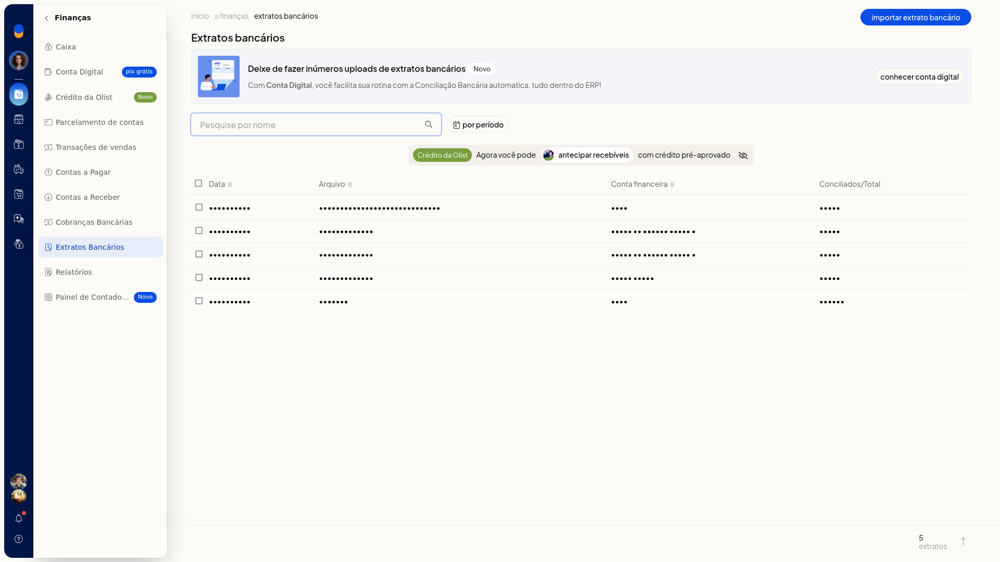
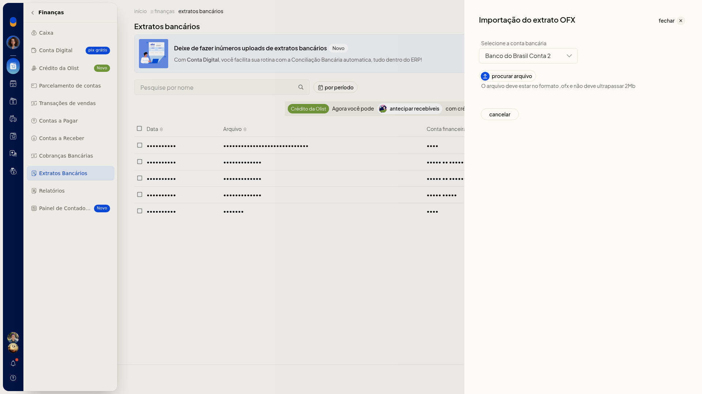
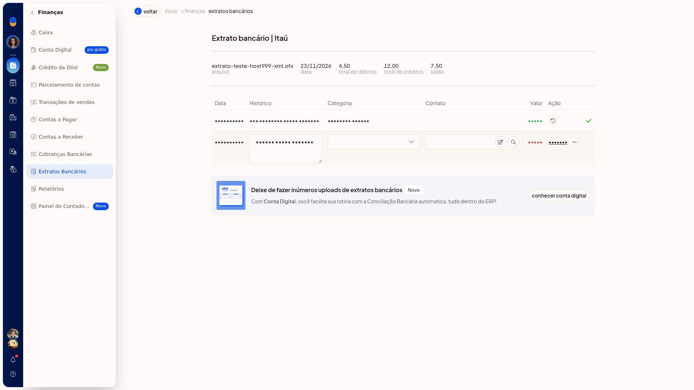
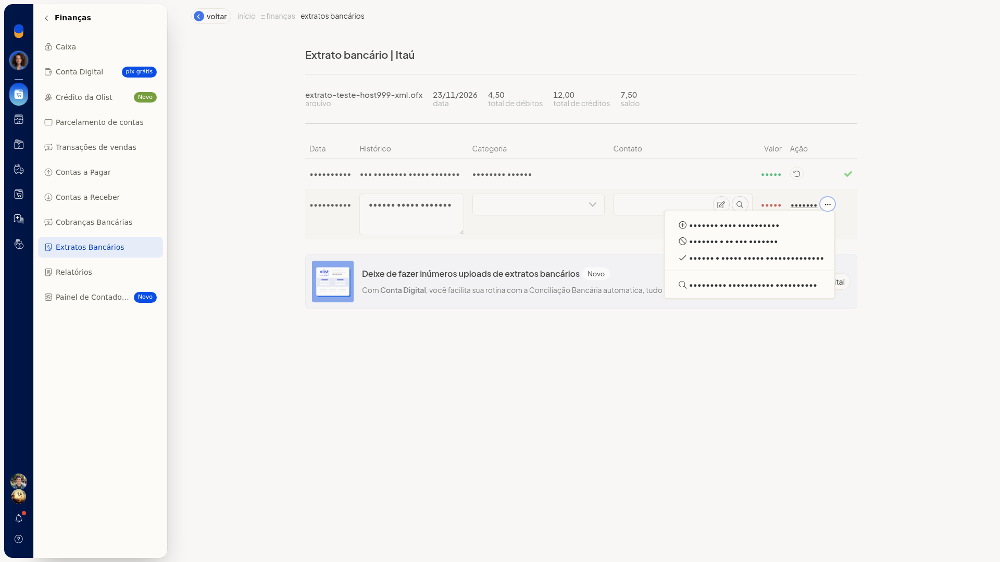
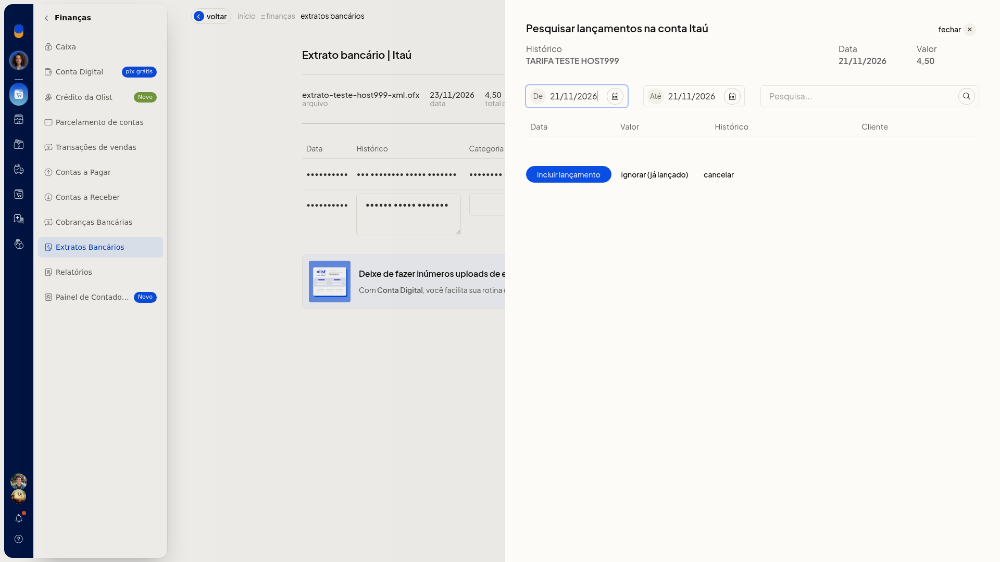

Extratos bancários e conciliação
No ERP da Olist, você importa o extrato do banco em arquivo OFX e confere cada linha com os lançamentos do caixa. Dá para trazer o arquivo pelo caixa ou por Extratos Bancários. Em cada linha, você inclui o lançamento, ignora o que já foi lançado, lança e paga a conta correspondente ou consulta lançamentos já existentes.
Pré-requisitos
- Tenha ao menos uma conta financeira cadastrada. A importação pede uma conta existente.
- Para conciliar, o extrato precisa já aparecer na lista de Extratos Bancários.
Importante
- O extrato importado por essa tela é um arquivo.ofx de no máximo 2Mb.
Instruções
Pelo caixa
- Acesse Finanças > Caixa.
- Abra Mais ações e escolha Importar extrato OFX.
- Selecione a conta financeira já cadastrada e indique o arquivo.ofx de no máximo 2Mb.
Pela tela de extratos
-
Acesse Finanças > Extratos Bancários.
-
Na lista, use a busca por nome e por período. As colunas são Data, Arquivo, Conta financeira e Conciliados/Total.

-
Clique em importar extrato bancário.
-
Escolha a conta financeira e indique o arquivo.ofx de no máximo 2Mb.

Conciliar uma linha do extrato
-
Acesse Finanças > Extratos Bancários e abra um extrato da lista.
-
Confira no cabeçalho a data do extrato e os totais de débitos, créditos e saldo. A linha já conciliada aparece com categoria e indicador de conferência.

-
Na linha ainda não conciliada, abra o menu e escolha uma opção: Incluir este lançamento, Ignorar / já foi lançado, Lançar e pagar conta correspondente ou Consultar lançamentos existentes.

-
Em Consultar lançamentos existentes, a busca usa a conta do extrato, o histórico, a data e o valor, com intervalo De e Até. Escolha incluir lançamento, ignorar (já lançado) ou cancelar.

Resultado
A linha conciliada do extrato aparece com categoria e indicador de conferência. Na lista, a coluna Conciliados/Total mostra o andamento do arquivo.